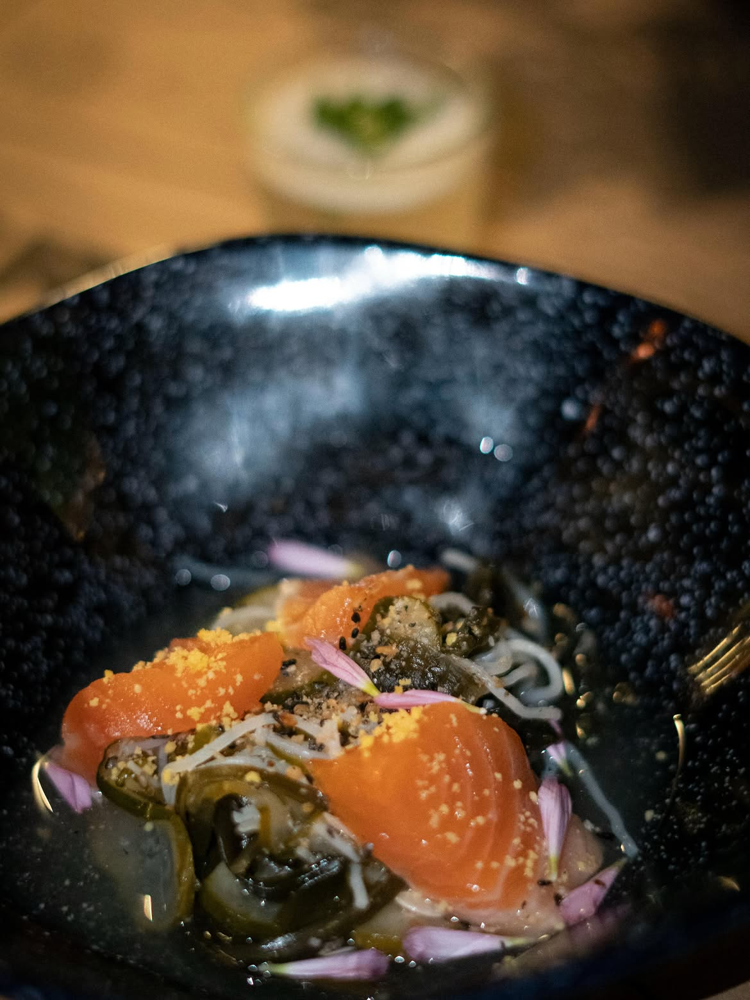
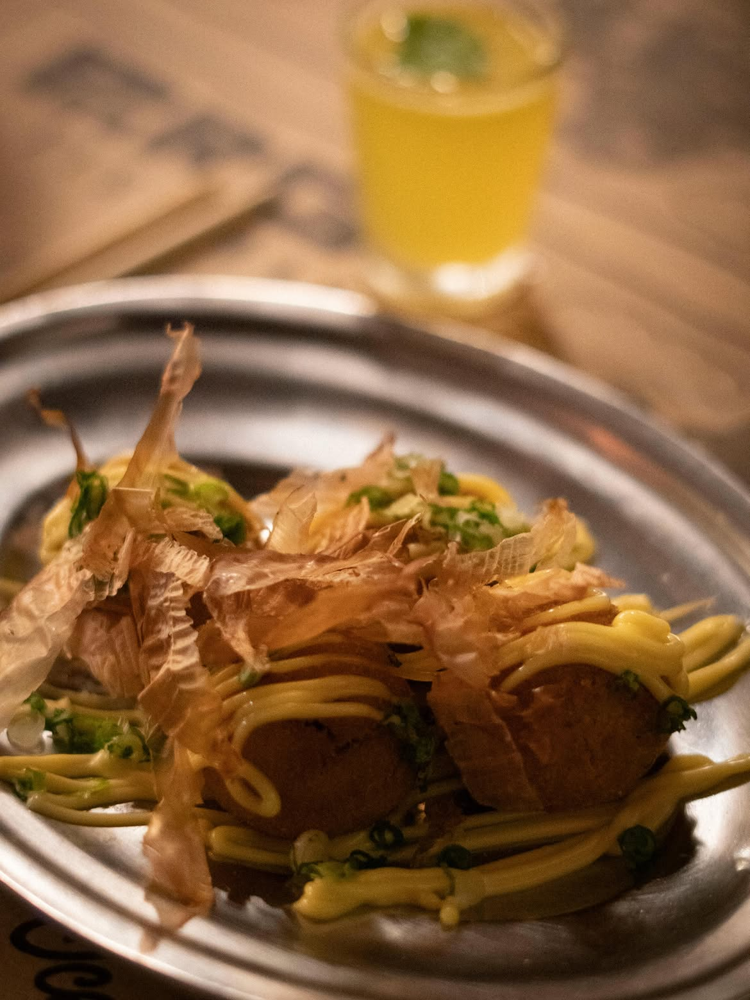
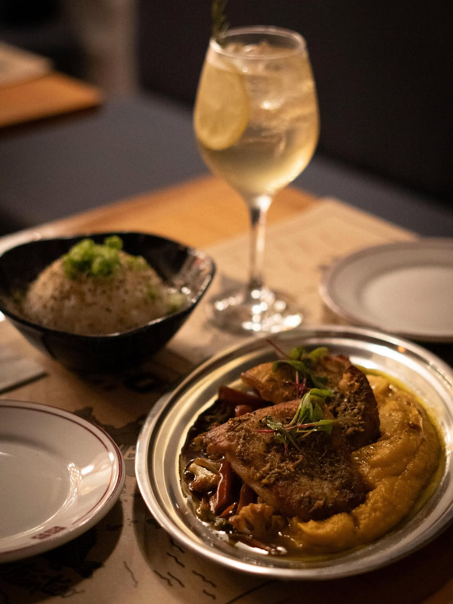
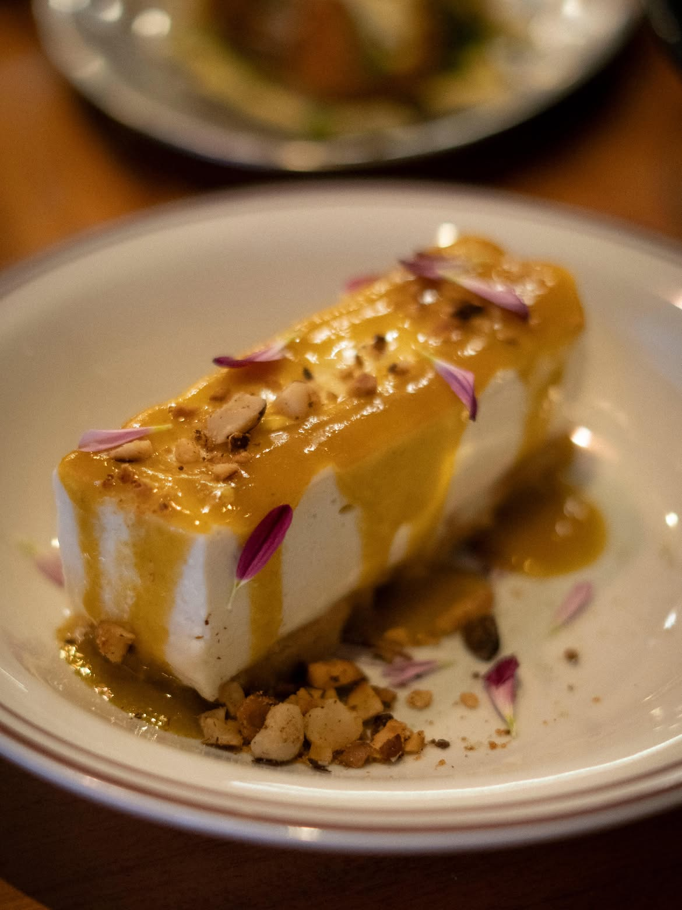
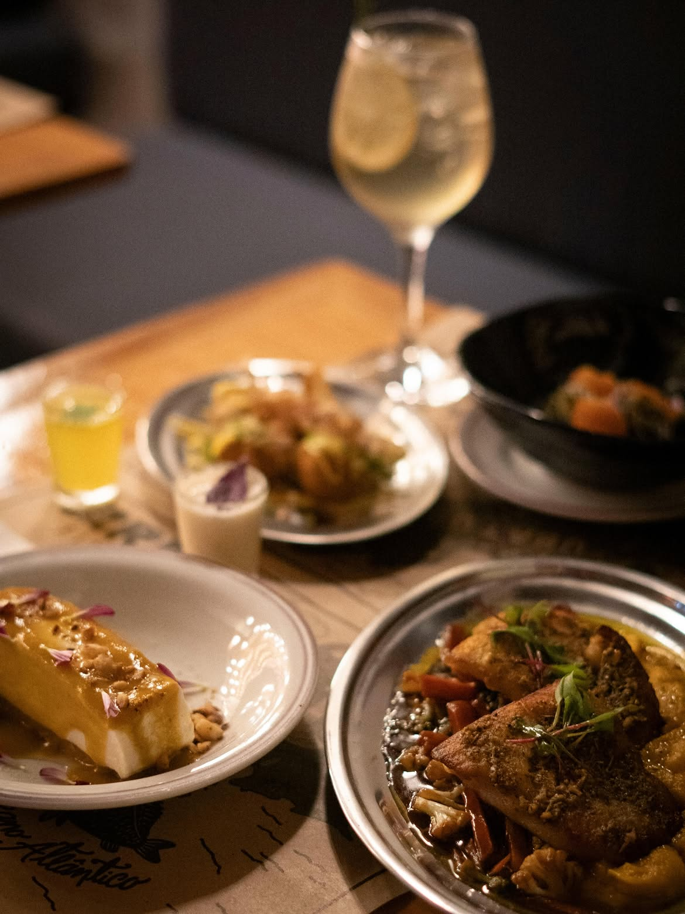
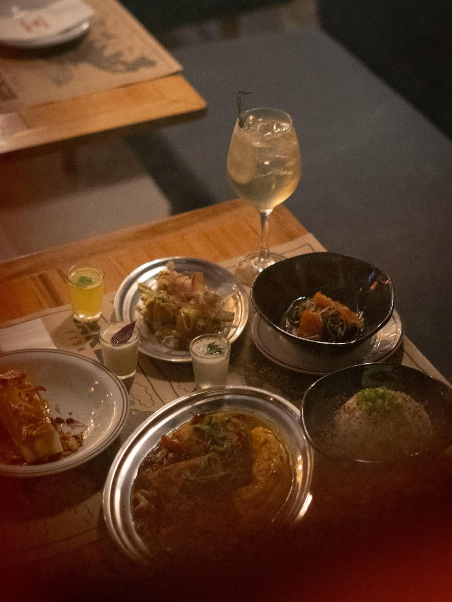
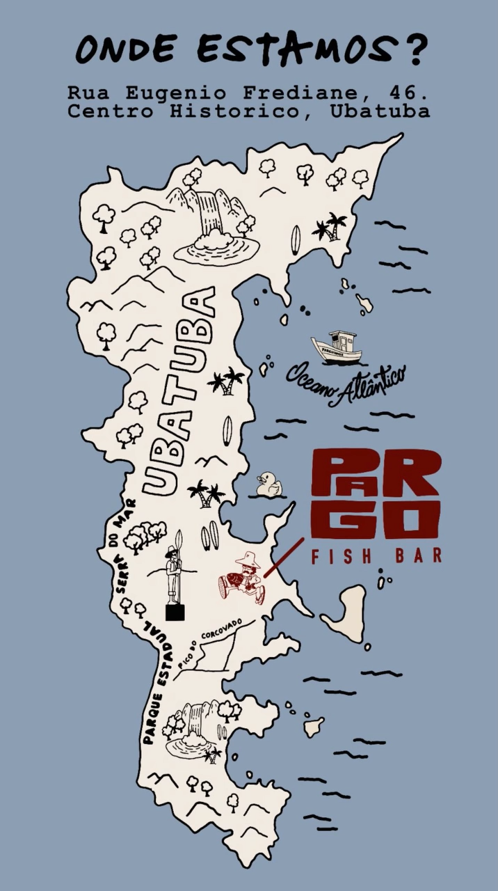

Ostras da Fazenda
meia dúzia · R$ 54Ao natural, com mignonette de tangerina.
Ubatuba · Litoral Norte
Drinks autorais e cozinha marítima num só balcão. Peixe fresco do dia, raw bar e coquetelaria de assinatura — de frente pro mar.
O conceito
O Pargo nasceu da vontade de juntar duas coisas que Ubatuba faz bem: o peixe que chega fresco todo dia e a noite que pede um bom drink. Aqui a cozinha conversa com o bar — o mesmo cítrico que tempera a ostra volta no copo, a defumação do peixe aparece no coquetel.
Menu curto e sazonal, do que o mar deu naquele dia. Sem cardápio gigante, sem congelado. O que tem, tem de bom.
“A gente serve o que o mar mandou hoje —
e um copo à altura.”
A casa






Chega mais
R. Eugênio Frediani, 46 — Ubatuba, SP
Reservas e encomendas pelo WhatsApp. Para grupos acima de 8 pessoas, fale com a gente com antecedência.
